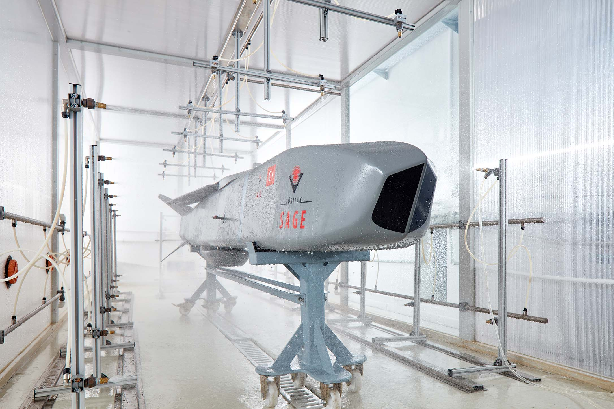
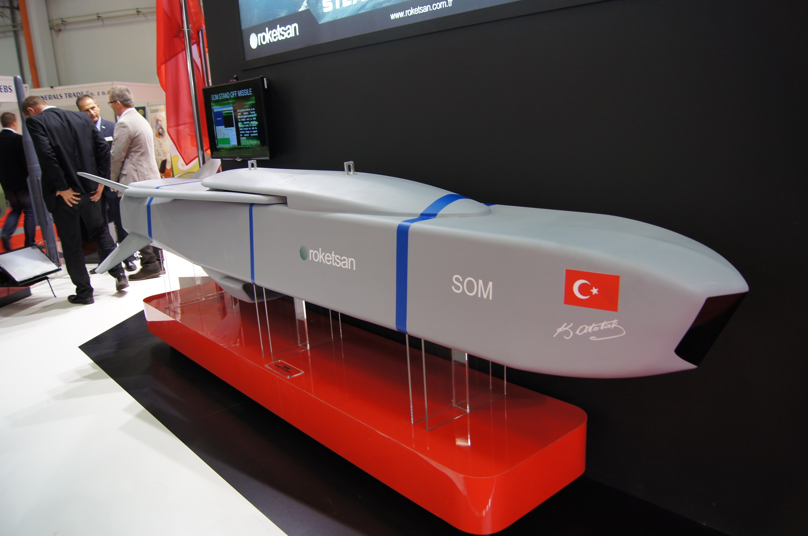
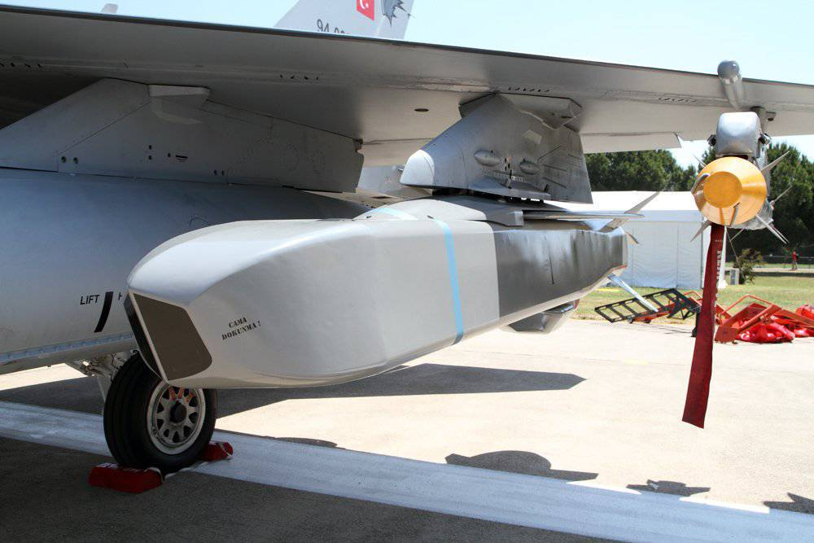

Havadan Satıha Orta Menzilli Seyir Füzesi
SOM, hava savunma sistemlerinin etkili menziline girmeden yoğun korunan kara ve deniz hedeflerine karşı kullanılmak üzere geliştirilen havadan satıha seyir füzesidir.
Füze ailesi; uzun menzil, düşük radar görünürlüğü, yüksek hassasiyetli terminal safha ve her hava koşulunda görev yapabilme gibi özelliklerle modern stand-off taarruz ihtiyaçlarına cevap verir.
SOM ailesinde görev güncelleme, yeniden saldırı, görev iptali, üç boyutlu rota planlama ve hedefte zamanlama gibi gelişmiş görev yetenekleri bulunur.
250 km
~4 m
~600 kg
~230 kg
IIR (B1/B2)
F-4 / F-16
| Füze Tipi | Havadan satıha stand-off seyir füzesi |
| Adı | SOM |
| Görev Alanı | Yoğun korunan kara ve deniz hedeflerine karşı menzil dışından hassas taarruz |
| Varyantlar | SOM-A, SOM-B1, SOM-B2 |
| Uzunluk | ~4 m |
| Ağırlık | ~600 kg |
| Azami Menzil | 250 km |
| Güdüm Modları | INS / GPS / TRN; ileri varyantlarda GRNS / ATA |
| Arayıcı Başlık | SOM-A: yok, SOM-B1 ve SOM-B2: IIR |
| Harp Başlığı Ağırlığı | ~230 kg |
| Harp Başlığı Tipi | SOM-A ve SOM-B1: yüksek patlayıcı parçacık etkili, SOM-B2: tandem delici |
| Platformlar | F-4 / F-16 |
| Operasyonel Kullanım | Hava savunma menzili dışından stand-off taarruz |
| Düşük Görünürlük | Düşük radar kesit alanı ve düşük görünürlük yaklaşımı |
| Öne Çıkan Özellik | Türkiye’nin yoğun korunan hedeflere karşı kullanılan yerli stand-off seyir füzesi ailesi |
| Fırsat Hedefi | Fırsat hedeflerine angajman kabiliyeti |
| Darbe Parametreleri | Seçilebilir vuruş parametreleri |
| Otonom Kullanım | Otonom görev icrası |
| Terminal Hassasiyet | IIR ile yüksek hassasiyetli terminal safha |
| Karşı Tedbir Dayanımı | Karşı tedbirlere dayanıklı yapı |
| Veri Bağı | Hedef güncelleme, yeniden saldırı ve görev iptali desteği |
| Görev Planlama | 3 boyutlu görev planlama |
| Zamanlama | ToT, DToT, SToT |
| Salvo Atış | Ripple / salvo fire |
| Görev Esnekliği | Kara ve suüstü hedeflerine angajman, yeniden saldırı modu |
| Hava Koşulları | Tüm hava koşullarında görev yapabilme |


